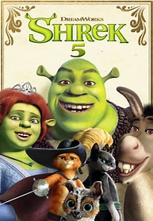
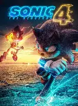
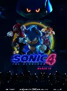
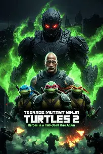
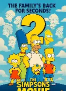
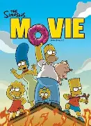

1
2
Shrek 5
June 30, 2027 | DreamWorks / Universal
Shrek, Fiona and Donkey are returning after a very long break. Mike Myers, Cameron Diaz and Eddie Murphy are back, and Zendaya joins the cast. The original films have stayed alive through quotes, memes and endless rewatches, so this is not just nostalgia for older fans; younger viewers already know the jokes from the internet.

Blow-up potential: Extremely high. This has family-movie money, nostalgia money and meme energy. One genuinely funny trailer could dominate TikTok, YouTube and group chats in a single day.
The real question: Will it keep the weird, sharp Shrek personality instead of feeling like a safe nostalgia product?
3
Spider-Man: Beyond the Spider-Verse
June 18, 2027 | Sony Pictures Animation
This is the promised finale to Miles Morales’s animated Spider-Verse story. The previous two films were praised for their art style, music, character work and willingness to be visually wild. The story resumes after a huge cliffhanger, with Miles stuck in another dimension and The Spot still a major threat.
Blow-up potential: Extremely high. This is one of the rare animated franchises that has fan-art, soundtrack and awards-level hype at the same time. If it nails the ending, people may talk about it as a modern animation classic.
The real question: Can it give Miles a satisfying ending after such a long wait?
4
Frozen III
Nov. 24, 2027 | Disney
Anna, Elsa, Kristoff and Olaf are headed back to Arendelle eight years after Frozen II. Disney has teased new threats, but has kept most story details quiet. The franchise is bigger than normal animation: it is songs, costumes, toys, family rewatches and a global fanbase.
Blow-up potential: Very high. Thanksgiving and Christmas are perfect for a family event movie. If even one song catches on the way “Let It Go” did, it could become unavoidable again.
The real question: Will the new music create the next big Frozen sing-along?
5
The Lord of the Rings: The Hunt for Gollum
Dec. 17, 2027 | Warner Bros.
Andy Serkis is set to direct and return as Gollum, with Peter Jackson producing. The film goes back to the Middle-earth world associated with Jackson’s earlier trilogies. The title points toward a more focused Gollum-led story rather than another enormous trilogy, which could make it feel fresh.
Blow-up potential: Very high, but risky. Middle-earth has a massive global audience and December is ideal for fantasy. The problem is that it opens the same day as Avengers: Secret Wars, so the trailer and word of mouth need to be excellent.
The real question: Can it feel like classic Middle-earth without simply replaying the old films?
6
Star Wars: Starfighter
May 28, 2027 | Lucasfilm / Disney
A new theatrical Star Wars story directed by Shawn Levy, rather than another numbered Skywalker episode. That is interesting because it offers the scale of Star Wars but has room to introduce new characters and not depend entirely on old cameos.
Blow-up potential: High. Star Wars still has huge worldwide recognition, and a late-May release screams summer blockbuster. Its ceiling is massive if casual viewers see it as a fresh adventure, not another piece of homework.
The real question: Will “new Star Wars” actually feel new enough to bring back casual fans?
7
Man of Tomorrow
July 9, 2027 | DC Studios / Warner Bros.
James Gunn’s next Superman movie continues the new DC Universe, with David Corenswet as Superman and Nicholas Hoult as Lex Luthor. It is more than just a sequel: people will treat it as a test of whether DC’s reboot can build momentum and deliver a superhero universe audiences trust.
Blow-up potential: High. Superman is one of the few heroes everybody recognizes. Great reviews and a confident tone could turn this into DC’s big reset moment; weak reviews would make the online arguments brutal.
The real question: Can DC turn goodwill into a true must-see sequel?
8
Narnia: The Magician’s Nephew
Feb. 12, 2027|Netflix streaming planned after theatrical run
There is no official trailer
Greta Gerwig is launching a new Narnia screen series with The Magician’s Nephew, the origin story of the fantasy world. The announced cast includes Meryl Streep, Emma Mackey and Daniel Craig. Because it is a prequel, viewers can jump in even if they missed the older Narnia films.
Blow-up potential: High. Gerwig brings real curiosity, Narnia has broad family appeal, and the theatrical-before-Netflix plan makes it feel more like an event. It could surprise people if the world feels magical instead of generic.
The real question: Can it win both longtime Narnia fans and viewers meeting the world for the first time?
9
A Quiet Place Part III
July 30, 2027 | Paramount Pictures
No dedicated trailer was found
The main A Quiet Place storyline returns, with John Krasinski set to write and direct. Its core idea is still simple and powerful: creatures hunt by sound, so even a creaky floor or a whispered line can make a theatre go silent.
Blow-up potential: High for horror. Horror does not need superhero-level sales to be a huge hit, and this series already proved it can make a quiet cinema feel tense. A sharp trailer could make it a major group-watch release
The real question: Can the series raise the stakes without repeating the same tricks too often?
10
The Legend of Zelda
Apr. 30, 2027 | Sony Pictures
No trailer link found. Still early in the marketing.
Nintendo’s Zelda is one of gaming’s most important fantasy franchises, so this adaptation comes with huge expectations. Official plot details are still limited. That means casting, Link’s portrayal, Hyrule’s look and the balance between action and exploration will all be watched very closely by gamers.
Blow-up potential: Very high, with a big unknown factor. Recent video-game adaptations showed that iconic game worlds can attract enormous audiences. Zelda could be an all-ages fantasy monster if it respects the games and tells a good story for non-players too.
The real question: Will it capture the feeling of exploring Hyrule instead of only dropping references?
Honourable Mentions
These are not small films at all. They just have more uncertainty, tougher competition or a narrower audience. A great trailer, strong reviews or a viral moment could easily push any of them into the top tier.
Godzilla x Kong: Supernova
Mar. 26, 2027
The MonsterVerse keeps rolling with more giant-creature spectacle. These movies travel well internationally and are made for premium screens.
Blow-up potential: High. If the monster designs and action clips hit online, this could own spring.
The real question: Does the trailer give people a reason to care?
Sonic the Hedgehog 4
Mar. 19, 2027
Sonic has become a reliable family-and-gamer series, with recognizable characters and easy game tie-ins.


Blow-up potential: High. It may not dominate adult film talk, but kids, gamers and families can give it a strong run.
The real question: Will the trailer give people a reason to care?
Teenage Mutant Ninja Turtles 2
Aug. 13, 2027
The turtles have cross-generation appeal through cartoons, games, toys and movies, with the recent animated style earning fresh respect.

.JPEG) Blow-up potential: Medium-high. Strong animation and a memorable villain could make it a youth-culture hit.
The real question: Will the trailer give people a reason to care?
Blow-up potential: Medium-high. Strong animation and a memorable villain could make it a youth-culture hit.
The real question: Will the trailer give people a reason to care?
The Simpsons Movie 2
Sept. 3, 2027
No trailer link found, mostly just news and mentions
The Simpsons return to theatres two decades after the first movie. The awareness is huge; almost everybody knows the brand.


everybody knows the brand. Blow-up potential: Medium-high. The challenge is making it feel special enough to become an event, not just a long TV episode.
The real question: Will the trailer give people a reason to care?

.jpeg)
.jpeg)

.jpeg)
.jpeg)
.jpeg)
.jpeg)
.jpeg)
.jpeg)
.jpeg)
.jpeg)
.jpeg)
.jpeg)
.jpeg)
.jpeg)
.jpeg)
.jpeg)
.jpeg)
.jpeg)